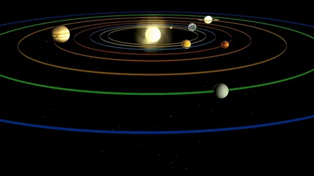
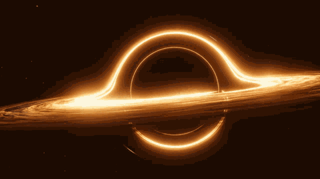

عموما
تتكون المجموعة الشمسية من الشمس وثمانية كواكب تدور حولها، بالإضافة إلى كواكب قزمة، وأقمار، ونيازك، ومذنبات. الشمس، وهي نجم مركز المجموعة، تمثل 99.86% من كتلة النظام الشمسي، وتعتبر مصدر الطاقة والحرارة للأرض وكواكب أخرى. الكواكب الرئيسية تشمل عطارد، الزهرة، الأرض، المريخ، المشتري، زحل، أورانوس، ونبتون، وتتوزع بين الكواكب الأرضية الصغيرة والكواكب الغازية العملاقة. تدور هذه الكواكب في مدارات بيضاوية، وتتأثر بجاذبية الشمس. كما توجد مجموعة متنوعة من الأجسام الأخرى، مثل حزام الكويكبات بين المريخ والمشتري، وحزام كويبر وراء نبتون. تسهم دراسة المجموعة الشمسية في فهم تكوين الكون وتاريخ الأرض.
الكواكب
عطارد :
الزهره:
الارض
المريخ:
مقارنة الكواكب
| الكوكب | الحجم (كم³) | المسافة من الشمس (مليون كم) | درجة الحرارة المتوسطة (°C) |
|---|---|---|---|
| عطارد | 6.1 × 10³ | 57.9 | 167 |
| الزهرة | 9.28 × 10³ | 108.2 | 464 |
| الأرض | 1.08 × 10¹² | 149.6 | 15 |
| المريخ | 6.42 × 10¹¹ | 227.9 | -63 |
| المشتري | 1.43 × 10¹⁵ | 778.3 | -108 |
| زحل | 8.27 × 10¹⁴ | 1427 | -139 |
| أورانوس | 3.88 × 10¹³ | 2871 | -197 |
| نبتون | 6.25 × 10¹³ | 4497 | -201 |
| بلوتو | 1.66 × 10¹² | 5906 | -229 |
اضافات
تكوين المجموعة الشمسية
تكونت المجموعة الشمسية قبل حوالي 4.6 مليار سنة من سحابة ضخمة من الغاز والغبار. تحت تأثير الجاذبية، انهارت هذه السحابة لتشكيل الشمس والكواكب. الشمس تكونت في المركز، بينما تجمعت المواد الأخرى لتكوين الكواكب والأقمار. الكواكب القريبة من الشمس (مثل عطارد والزهرة) أصغر وأصعب، بينما الكواكب البعيدة (مثل المشتري ونبتون) أكبر وأكثر غازية.
. الكواكب الغازية مقابل الكواكب الصخرية
تنقسم الكواكب في المجموعة الشمسية إلى نوعين رئيسيين: الكواكب الغازية والكواكب الصخرية. الكواكب الغازية (المشتري، زحل، أورانوس، نبتون) تتكون بشكل أساسي من الغاز ولها أقمار عديدة وحلقات، بينما الكواكب الصخرية (عطارد، الزهرة، الأرض، المريخ) لها سطح صلب وتعتبر أكثر ملاءمة للحياة.
: أقمار الكواكب
تحتوي معظم الكواكب على أقمار تدور حولها، ولكل قمر خصائصه الفريدة. على سبيل المثال، قمر الأرض هو الوحيد الذي نعرفه بأنه يؤثر بشكل كبير على المد والجزر. بينما تيتان، قمر زحل، لديه غلاف جوي كثيف ويدعم بحيرات من الميثان، مما يجعله مكانًا مثيرًا للدراسة.
: المذنبات والكويكبات
المذنبات هي كتل جليدية تدور حول الشمس، وتظهر ذيلًا لامعًا عندما تقترب من الشمس. أما الكويكبات فهي صخور فضائية تدور في حزام بين المريخ والمشتري. هذه الأجسام تعتبر نوافذ إلى الماضي، حيث تعكس ظروف النظام الشمسي في بداياته.
: استكشاف الفضاء
بدأت مهمة استكشاف المجموعة الشمسية في القرن العشرين، مع إرسال المركبات الفضائية لدراسة الكواكب. كانت مهمات مثل "فويجر" و"بioneer" أول من زار الكواكب الخارجية. اليوم، نستخدم تلسكوبات فضائية لرصد الظواهر الكونية، مما يساعدنا في فهم تكوين وتطور المجموعة الشمسية.
: التغيرات المناخية على الكواكب
كل كوكب في المجموعة الشمسية يتمتع بمناخ فريد. على سبيل المثال، يمتلك الزهرة غلافًا جويًا كثيفًا يسبب ارتفاع درجات الحرارة بشكل كبير، بينما يعاني المريخ من جو رقيق ودرجات حرارة منخفضة. دراسة هذه المناخات تساعدنا على فهم تغير المناخ على الأرض وكيفية تأثير العوامل البيئية.
: نظريات نشوء الحياة في المجموعة الشمسية
تعتبر الأرض الكوكب الوحيد الذي يدعم الحياة كما نعرفها، لكن بعض العلماء يعتقدون أن الحياة قد تكون موجودة في أماكن أخرى، مثل تحت سطح قمر يوروبا التابع للمشتري، حيث قد توجد محيطات من الماء السائل. دراسة هذه النظريات تفتح أبوابًا لفهم إمكانية الحياة خارج كوكب الأرض.
